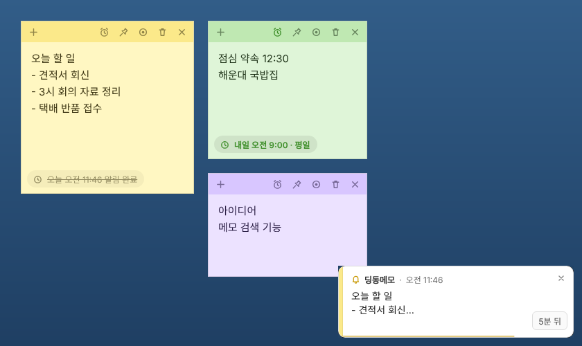

딩동메모
바탕화면에 붙여 두는 메모에 시간을 정해 두면, 그 시간에 화면 오른쪽 아래에 메신저처럼 알림이 떠요. 할 일이나 약속을 깜빡하지 않게 챙겨 주는 작은 프로그램입니다.

주요 기능
메모를 쓰고, 시간을 정하고, 잊어버리면 됩니다.
메신저 같은 알림
알림 시간이 되면 화면 오른쪽 아래(위치는 바꿀 수 있어요)에 알림이 올라오고 짧은 알림음이 울려요. 작업 중인 창을 가리거나 포커스를 빼앗지 않아요.
반복과 다시 알림
한 번, 매일, 평일 반복을 고를 수 있어요. 알림에서 5분 뒤를 누르면 잠시 뒤 다시 알려 줘요.
놓친 알림도 챙겨요
PC가 절전 중이라 지나간 알림은 깨어날 때 "놓친 알림"으로 띄우고, 확인할 때까지 남겨 둬요.
바탕화면에 그대로
여섯 가지 색상, 항상 위 고정, 위치와 크기 기억. 창을 닫아도 작업 표시줄 트레이에 남아 알림이 계속 동작해요.
설치 방법
- 위의 Windows용 다운로드 버튼으로
DingDongMemo-Setup-0.1.7.exe를 받아요. - 받은 파일을 실행하고 설치 폴더를 고른 뒤 설치를 눌러요.
- 설치가 끝나면 바탕화면과 시작 메뉴의 딩동메모로 실행해요.
Edge에서 "일반적으로 다운로드되지 않습니다"가 뜨면
새로 나온 프로그램이라 Edge가 아직 이 파일을 알아보지 못해서 뜨는 안내예요. 다운로드 목록에서 파일 옆 … → 유지 → 자세히 표시 → 그래도 유지를 누르면 받아져요.
"Windows의 PC 보호" 창이 뜨면
새로 나온 프로그램이라 Windows가 아직 이 파일을 알아보지 못해서 뜨는 안내예요. 창의 추가 정보를 누른 뒤 실행을 누르면 설치가 이어져요.
사용 방법
- 새 메모: 메모 위쪽의 +, 또는 트레이 아이콘을 두 번 클릭
- 제목: 메모 맨 위 제목 없음 자리에 제목을 적어요. 비워 두면 본문 첫 줄이 제목처럼 쓰여요
- 메모 목록: 트레이 아이콘을 클릭하거나 메모 위쪽의 목록 버튼을 누르면 모든 메모가 제목과 함께 나와요. 검색하거나 정렬해서 원하는 메모를 눌러 열어요. 핀 버튼으로 자주 보는 메모를 맨 위에 고정하고, 메모를 오른쪽 클릭하면 제목·색상·알림을 바꾸거나 삭제할 수 있어요
- 바탕화면에 꺼내 두기: 메모 목록에서 메모를 끌어 목록 밖에 놓으면, 그 자리에 제목만 보이는 작은 메모가 붙어요. 더블클릭하면 바로 열리고, 끌어서 옮기거나 ×로 치울 수 있어요
- 알림 설정: 메모 위쪽의 시계 버튼 → 날짜·시간과 반복을 고르고 저장
- 메모 닫기와 다시 열기: ✕로 닫은 메모는 메모 목록에서 다시 열 수 있어요
- 알림 설정: 트레이 아이콘 오른쪽 클릭 → 설정…(또는 메모 목록의 톱니바퀴)에서 알림이 뜰 위치, 시간이 지나면 닫힐지 확인을 눌러야 닫힐지, 표시 시간(3~10초)을 정할 수 있어요
- 업데이트: 새 버전이 나오면 딩동메모가 알아서 받아 두고 알려 줘요. 지금 재시작을 누르거나 프로그램을 끌 때 설치돼요. 사이트에서 다시 받을 필요가 없어요
- 윈도우 시작 시 자동 실행: 트레이 아이콘 오른쪽 클릭 → 윈도우 시작 시 자동 실행 체크
- 삭제: 프로그램은 Windows 설정의 앱 → 설치된 앱에서 제거할 수 있어요
개인정보
메모 내용과 알림 설정은 내 PC에만 저장되고, 어떤 서버로도 보내지 않아요. 로그인이나 회원가입도 없어요. 저장 위치는 %APPDATA%\딩동메모\memos.json이에요.
업데이트 내역
0.1.7 2026년 11월 7일
- 메모 목록에서 메모를 목록 밖으로 끌어다 놓으면 바탕화면에 제목만 보이는 미니 메모로 꺼내 둘 수 있어요. 항상 위에 떠 있고, 더블클릭하면 메모가 열려요.
- 0.1.6을 쓰고 있다면 이 버전은 자동으로 업데이트돼요.
0.1.6 2026년 11월 7일
- 자동 업데이트를 넣었어요. 이 버전부터는 새 버전이 나오면 딩동메모가 알아서 받아 두고, 재시작하거나 프로그램을 끌 때 설치돼요.
- 0.1.5 이하를 쓰고 있다면 이번 한 번만 여기서 0.1.6을 받아 설치해 주세요. 메모와 설정은 그대로 남아요.
- 설정 창에서 현재 버전 확인, 업데이트 확인, 자동으로 받기 켜기·끄기를 할 수 있어요.
0.1.5 2026년 11월 6일
- 설정 창을 추가했어요. 알림이 뜰 위치를 화면 네 모서리와 위·아래 가운데 중에서 고를 수 있어요.
- 알림을 시간이 지나면 닫히게 할지, 확인을 눌러야 닫히게 할지 고를 수 있어요. 자동으로 닫힐 때는 3~10초 중에서 표시 시간을 정해요.
0.1.4 2026년 11월 6일
- 메모 목록에서 핀 버튼으로 메모를 맨 위에 고정할 수 있어요.
- 목록에서 메모를 오른쪽 클릭하면 제목 바꾸기, 색상, 알림 설정·해제, 항상 위에 표시, 삭제를 바로 할 수 있어요.
0.1.3 2026년 11월 6일
- 메모마다 제목을 붙일 수 있어요. 알림에도 제목이 같이 나와요.
- 메모 목록 창을 추가했어요. 트레이 아이콘을 클릭하면 열리고, 제목·내용으로 찾고 골라서 열 수 있어요.
0.1.2 2026년 11월 6일
- 메모 창이 작업표시줄에 보여요. 여러 메모는 딩동메모 아이콘 하나로 묶이고, 마우스를 올리면 메모 첫 줄로 구분돼요.
- 아이콘을 새로 바꿨어요.
0.1.1 2026년 11월 6일
- 이름을 스티커 메모에서 딩동메모로 바꿨어요. Windows에 기본으로 들어 있는 스티커 메모 앱과 헷갈리지 않도록요.
- 0.1.0을 쓰셨다면 새 버전을 설치하고 처음 실행할 때 기존 메모를 그대로 가져와요. 확인한 뒤 예전 스티커 메모는 설정 → 앱 → 설치된 앱에서 제거해 주세요.
0.1.0 2026년 11월 6일
- 첫 버전 공개
설치 파일의 SHA-256 값과 지난 버전은 릴리스 페이지에서 확인할 수 있어요.
문제가 있거나 바라는 기능이 있으면 문의하기로 알려 주세요.